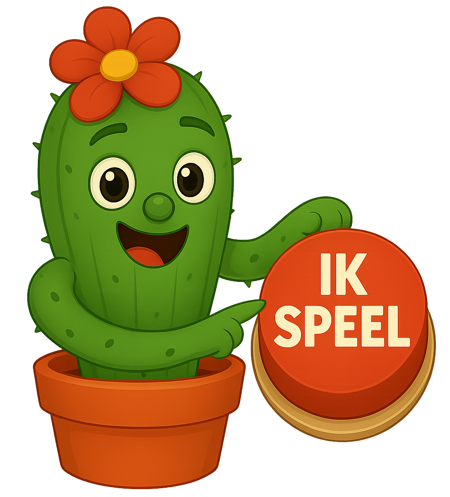

Ganzenbord
Reken, gooi en bereik als eerste de finish.

Je oefent in elk spel de tafels die jij kiest.
Reken, gooi en bereik als eerste de finish.

Vind de juiste antwoorden in de woestijn.

Reken snel voordat de tornado toeslaat.

Los tafels op en verzamel sombrero’s.